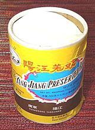

Wherever a Chinese recipe calls for "Black Beans", this is what is meant.
An important ingredient used throughout China and parts of Southeast
Asia, they are available in just about any market serving an Asian community.
Black soy beans are fermented with salt and ginger, and sometimes other
spices, then dried and packaged. The traditional cardboard cylinder package
can still be had but they are now commonly vacuum packed in poly bags.
|  |
Prep: Most people rinse the beans before use but others just go with them as they are (saltier). In nearly all cases you will lightly crush them or thoroughly mash them depending on the effect desired. Storage: In a sealed container these beans will last for years at room temperature. Even the cardboard cylinders are lined with a plastic bag now. Recipes: Black bean sauces are most often made up on the fly within the recipe that uses them, but some recipes call for "black bean sauce" or "black bean paste". We have typical recipes for two versions, one appropriate for Sichuan and Hunan recipes (Black Bean Chili Sauce) and one for the rest of China (Black Bean Sauce). |